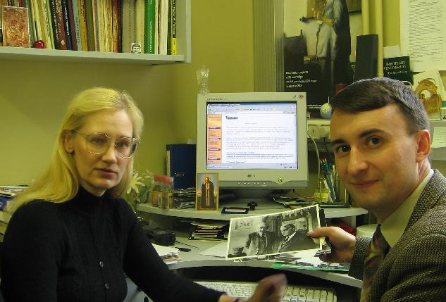

Gumilevica - первая десятилетка в Интернете
Создатели сайта
| 
Встреча с руководством Фонда Л. Н. Гумилёва, Санкт-Петербург, октябрь 2005 г. |
Год за годом пронеслись десять лет с того
момента, когда небольшая группа
добровольцев со всего бывшего Советского
Союза приступила к непростому делу
по созданию и развитию,
посвященному научному наследию Льва
Николаевича Гумилёва. К счастью, эта
инициатива не заглохла, и нам удалось
развивая из одна в день этот проект,
превратить его один из самых
авторитетных интернет-ресурсов по
истории. Многие из те кто
стоят у истоков его создания отошли от дел,
переключившись на другие исторические проекты,
также ставшие ,
другие даже погибли в борьбе с мерзостями
постсоветского мира.
Десять лет ≈ солидный срок для интернет-проекта, особенно в молодом русскоязычном сегменте Сети, и потому мы попытаемся оценить, насколько оправданными были подходы, положенные в его основу, и насколько он оказался полезным и эффективным для растущей с каждым годом аудитории Интернета. Но уже сейчас можно сказать, что самое главное сделать удалось: общество приходит к пониманию идей Льва Николаевича, с годами все больше и больше ученых-гуманитариев стали применять в своих работах ранее безнадежную "этногенетическую" парадигму, а художники создавать произведения, которые навеяны его трудами. Нам кажется, что свою лепту в это внесли и усилия нашей команды по пропаганде научного наследия ученого. |
Вспомним, что еще в конце 1990≈х г. в Сети практически не было работ Гумилёва и довольно мало исторических работ, но благодаря усилиям нашей команды к 2003 г. удалось разместить все крупные работы Льва Николаевича и значительную часть его статей, произведения историков-евразийцев, а также труды тех ученых, которые вольно или невольно раскрывали в них ход истории с позиций школы Л. Н. Создали мы и активно развиваемый ангоязычный раздел, куда помещены переводы важнейших трудов ученого.
Также за эти годы появилось множество других сайтов евразийской и неоевразийской направленности, а также электронных библиотек, где имеются работы евразийцев. Но как справедливо отмечает, видный исследователь евразийства, канд. философ. наук Рустем Вахитов, крупным евразийским сайтом с наиболее полным собранием работ евразийцев, по-прежнему является наш сайт сторонников идей Л. Н. Гумилёва. В разделе ╚Анналы╩ собраны важнейшие работы Трубецкого, Вернадского, Савицкого и Хара-Давана.
Позже наши усилия перенеслись на собрание работ предтеч евразийцев начала XX в.: Николая Яковлевича Данилевского (1822≈1885) и Константина Николаевича Леонтьева (1831≈1891), которого Л. Н. Гумилёв считал своим учителем евразийства. На очереди стоит поиск и публикация работ, которых можно рассматривать в качестве самых первых манифестов евразийства, которые прозвучали в прошлом.
Не так давно был создан раздел Соратников Льва Николаевича, куда помещаются труды ученых, чья деятельность оказала существенное влияние на пассионарную теорию этногенеза. Так на страницах нашего сайта появились работы географа Ю. К. Ефремова (1913≈1999), биолога Бориса Сергеевича Кузина (1903≈1973), разрабатывавший теорию поля в биологии. Вскоре мы планируем поместить материалы биолога, Михаила Ефимовича Лобашева (1907≈1973), создателя теории сигнальной наследственности (некоторые биологи-этологи предпочитают более точный термин "сигнальная преемственность"), работы историка Дмитрия Сергеевича Лихачёва (1906≈1999), связанные с публикациями трудов Л. Н. Гумилёва и статьи философа Юрия Мефодьевича Бородая (1934≈2006), прорвавшего информационную блокады вокруг ПТЭ в начале 1980≈х гг.
Значительный интерес для наших читателей представляет исторические описания хода развития конкретных супертэносов и этносов. Для освещения этой темы были опубликованы первые три тома из многотомной монографии Олега Георгиевича Большакова "История Халифата", охватывающих период с 570 по 696 гг. Надеемся, что в следующие десять лет мы опубликуем последнюю часть тетралогии этого автора, описывающую распад Арабского Халифата (696≈750). Особый интерес представляет книга друга Гумилёва ≈ опального ленинградского востоковеда Виталия Александровича Белявского "Вавилон легендарный и Вавилон исторический" (1971), которая является, пожалуй, первой и на долгие годы единственной в мировой литературе о Вавилоне эпохи Навуходоносора.
После того как в 2003 г. на сайте была опубликовано интервью в молодежном журнале "Смена" "История - наука естественная, или визит к профессору Гумилеву" (1988) с описание толчка XVIII в. х.э. мы были просто обязаны поместить книгу Э.А. Риттер. "Зулус Чака. Возвышение зулусской империи", которую высоко ценил Лев Николаевич. Следом на сайте появилась работа, которую также часто цитировал ученый, "Червленый Яр" ≈ исследование по истории и географии Среднего Подонья в XIV≈XVI вв., принадлежащая перу его друга ≈ Александра Александровича Шенникова. В дальнейшем мы продолжим публикации подобных работ в проекте "Анналы", обязательно затронув как и хорошо раскрытый Гумилевым этногенез римского суперэтноса, так и практически не описанный у него этногенез раджпутов ≈ ведущего этноса Индостана V≈XVIII вв.
К сожалению, не осуществились наши планы по выкладки монографии Михаила Илларионовича Артамонова "История Хазарии" (1962), научным редактором которой был Л. Н. Гумилев. Вышедшую в 2001 г. вторую редакцию этой книги осуществляли ученые явно не согласные с позицией Льва Николаевича, а найти первую редакцию довольно сложно, так как она была изъята из большинства библиотек и уничтожена несколько десятков лет назад. За этим исключением, нам останется опубликовать только одну книгу Л.Н., которая еще не нашла своего место здесь. Это подготовленная его учеником О. Г. Новиковой "Струна истории. Лекции по этнологии", которая впервые увидела свет в издательстве "Айрис-прес" в 2007 г.
Наряду с этим значительные усилия нами прилагались по формированию обширной коллекции исторических карт для Интернета. Для реализации картостоительных планов такого масштаба в 2003 г. мы перешли на современный продукт ≈ ArcGIS. Благодаря такому шагу коллекция интернет-карт выросла до 160. Ныне она по праву является одной из самых обширных в русскоязычном сегменте. Особое место в ней занимает этнополитический атлас Евразии (700 г. до х.э.≈1200 г. х.э.), созданный петербургским историком Владимиром Булатом как квалификационная работа на соискание ученой степени кандидата исторических наук. Конечно же это получилось благодаря неоценимой технической помощи, которую нам оказывали профессионалы, например, из проекта . Однако останавливаться на поприще исторической картографии мы не намерены и продолжим работы как по созданию обычных карт для Интернета и бумажных изданий (например, включенных в качестве иллюстраций в издание лекций Л. Н. Гумилёва "Струна истории"), так и динамических (анимированных), которые уже появились в проекте "Хронософия".
Важную роль в продвижении материалов сайта в Интернете сыграла дискуссионая доска, которая была особенно активна первые три года. В последнее время интенсивность сообщений на ней снизилась, чего нельзя, пожалуй, сказать о её качестве. В то же время, мы с удивлением стали замечать, что материалы сайта стали растаскиваться по другим ресурсам Сети. Зачастую "заимствователи" при этом обрамляют их весьма некомплиментарными комментариями.
Да и сам Рунет за пятилетку 2003≈2008 гг. значительно разросся. Теперь, чтобы в этом обширном море информации посетители без труда могли находить именно наш сайт, следует решать вопрос продвижения сайта в Интернете и, в первую очередь, посредством оптимизации в поисковых системах, которые дают 3/4 всех наших читателей. И если до начала применения средств продвижения сайта годовой прирост посетителей составлял 25-35%, то затем возрос до 45-50%. Благодаря этому, ядро нашей аудитории, т. е. тех кто еженедельно посещает наши страницы, в холодный сезон превышает 2 тыс. чел. Вот ключевые слова для поиска по которым находят наш сайт: древняя русь, византия, куликовское поле, гумилев, вернадский, тюрки, исторические карты, пассионарность.
Еще одним источником поставки читателей стала блогосфера ≈ социальные сети, которые стали активно множиться с середины 2000≈х гг. Благодаря несметным комментариям разбросанным в блогах, как и ранее на страницах форумов, все больше и больше людей узнает о многочисленных материалах, которых можно найти на нашем сайте. Все острее встает вопрос совершенствования навигации на заметно разросшемся сайте и подготовке заметок Редколегии, которые бы освещали подборки публикации сайта по конкретным темам. Пока же мы снабжаем коллекцию карт ссылками на страницы, которые их иллюстрируют.
Вот и завершилась эта десятилетка, которую мы начинали по девизом "Служить безнадежному делу". Будем надеется, что она окажется не последней ...
21 марта 2008 г.
Эта страница была последний раз обновлена 20.08.08
|
Историческая и не только литература: менюхолдеры ... Индийские мастера известны с древности, а создатели женьшень инструкция по применению настойка. ?
|
06/10/20 - 03:42 |